Introduction
About the contributors
If you have contributed to this book, please add yourself to the list :)
Vivek KC (Mentor)
Ramdev C M
OPERATING SYSTEM
An Operating System is a program that manages a computer's hardware. It also provides a basis for application programs and acts as an intermediary between computer user and computer hardware.
Abstract view of the components of a computer system

Parts of OS
- Kernel
- Device drivers
- User Interface
- System Libraries
- System utilities - disk formaters, data recovery etc..
Functions
- Kernel functions +
- provides CLI/GUI
- provides sys utilities
- provides sys libraries
Kernel
Kernel is a software program and the heart of operating system. It is the portion of OS code that is always resident in the main memory.
We can have a kernel wihout OS but we cannot have OS without kernel
Functions
- Process Management
- Memory Management
- File system MAnagement
- Protection and security
- Device management
- Inter process communication(IPC)

Kernel mod & User mode
Kernel Mode
- Full access to Memory and I/O
User Mode
- Restricted access to instruction set and memory

The moment we came in read system call from Mode 1, there generates an interrupt or a trap
Trap shifts user mode to kernel mode
Now, the control enters kernel mode from user mode and changes the mode bit to 0. Then kernel executes the system call and again returns back to the user mode by shifting mode bit to 1.
Interrupts
- An input signal to the processor indicating an event requires immediate attention.
- The current process running on the processor gets interrupted
System Calls
User applications use sys calls to talk to the hardware. Codes to sys calls are implemented in the kernel, that's the reason why everything must be passed to the kernel.

Category of System Calls in Linux OS
- Process Management - fork(), exec(), wait(), exit()
- Memory Management - brk(), sbrk(), mmap()
- File system MAnagement - write(), read(), open(), close()
- Inter process communication(IPC) - pipe(), socket(), connect(), send(), recv()
Program vs Process
PROGRAM:
- An executable file that is stored on a hard disk or a secondary memory.
- Passive entity
- Memory: texts
PROCESS:
- The file or program under execution.
- Active entity
- Memory: stack + data + heap + text
PROCESS STATE DIAGRAM

Each state means?
NEW
- BATCH OS - Job arived in the job queue
- Time sharing OS - process is being created
READY
- Process waiting is ready queue for being assigned to a CPU/Processor
RUNNING
- pgm is being executed on the cPU
WAITING
- Process is waiting for some event to occur(I/O)
TERMINATED
- Process has finished its execution
INIT Process
- First process thst is started during the booting
- Process ID PID = 1
- This process keeps running forever until shut down
- All other process are direct or indirect children of INIT
Process creation using fork()
fork() creates a new child process that is a copy of the parent process.
When the parent process closes or crashes for some reason, it also kills the child process.
What happens when fork() is called?
Execution
- Both process starts executing from the next line after fork()
Memory
- stack, heap, text etc are duplicated for teh child process
What will fork () return? / How to differentiate parent process & child process?
- Returns the PID of the child process to the parent process
- Upon successful completion, fork() returns 0 to the child process
- -1 is returned to the parent process, no child process is created, and errno is set to indicate the error
Sample
fork (); // Line 1
fork (); // Line 2
fork (); // Line 3
P //parent process
|
L1 // There will be 1 child process
/ \ // created by line 1.
L2 L2 // There will be 2 child processes
/ \ / \ // created by line 2
L3 L3 L3 L3 // There will be 4 child processes
// created by line 3
So there are total eight processes (new child processes and one original process).
- The main process: P0
- Processes created by the 1st fork: P1
- Processes created by the 2nd fork: P2, P3
- Processes created by the 3rd fork: P4, P5, P6, P7
for n fork() calls, there will be 2^n processes
What happens to child process when parent is killed?
If the parent is killed, children become children of the init process (that has the process id 1 and is launched as the first user process by the kernel). The init process checks periodically for new children, and waits for them (thus freeing resources that are allocated by their return value).
Zombie Process
A process which has finished the execution but still has entry in the process table to report to its parent process.

If the parent process is not running anymore, then the presence of a zombie process indicates an operating system bug.
Can we kill zombie process?
We can't kill a zombie process because it's already dead. It won't respond to any signals because it's been removed from memory.
Orphan Process
A process whose parent process no more exists i.e. either finished or terminated without waiting for its child process to terminate. Orphan process gets reparented and new parent in most case is INIT process
Threads
- Basic unit of CPU utilization
- Consists of
- Thread ID
- Program Counter (PC)
- Register Sets
- Stack Segment Memory
If one thread crashes, all threads crashes.
- Consumes less resource

A real world example
MS word (process)
You are typing a paragraph on MS word. But in background one more thread running and checking your spelling mistakes. As soon as you do a typo the other thread notifies you about the typo.. And makes your life easy.
Linux
Linux operating systems are based on the Linux kernel. A Linux based operating system will consist of Linux kernel, GUI/CLI, system libraries and system utilities.
Linux is a kernel and not a complete operating system. Linux kernel is combined with GNU system to make a complete operating system
List of popular Linux distributions:
- Fedora
- Ubuntu
- Debian
- Centos
- Red Hat Enterprise Linux
- Arch Linux
apt and yum are package managers.
The Linux kernel is monolithic in nature. System calls are used to interact with the Linux kernel space.
Difference b/w Shell & Terminal
Shell is a program that takes command from the users an give it to OS for processing.
- Bash is a shell program in linux
Terminal is a program that opens a window to interact with the shell.
- gnome-terminal is an example
Booting Process of Linux System

Master Boot Record
- the first boot loader
- 512 Bytes
- Boot Loader
- Partition Table
- Magic Number(0xAA55) -hex
- could manage disks only upto 2TB
- looks for the second boot loader
- finds it and loads the first part of it to the main memory
GRUB
- loads configurations form /boot/grub2/grub.cfg
- displays a menu to select kernel to boot
- loads vmlinuz
- extract initramfs
- Once the kernel and the initramfs image are loaded into memory, the boot loader hands control of the boot process to the kernel.
KERNEL
- The kernel checks for the presence of the initramfs and, if found, mounts it as / and runs /init
- Kernal intitalize all hardware that are found as driver in initramfs
- To set up the user environment, the kernel executes the /sbin/init program
initramfs or initrd
- only purpose of an initramfs is to mount the root filesystem
/sbin/init (also called init)
-
PID = 1
-
systemd PID = 0 (this is the first process)
-
The init program is typically a shell script
- coordinates the rest of the boot process
- configures the environment for the user
-
When the init command starts, it becomes the parent or grandparent of all of the processes that start up automatically on the system.
- runs the /etc/rc.d/rc.sysinit script
- which sets the environment path, starts swap, checks the file systems, and executes all other steps required for system initialization
- Eg, Clock:- rc.sysinit reads the /etc/sysconfig/clock configuration file to initialize the hardware clock.
- which sets the environment path, starts swap, checks the file systems, and executes all other steps required for system initialization
- runs the /etc/inittab script, which describes how the system should be set up in each runlevel
Run Level
- preset single digit integer for defining the operating state of OS
- /etc/rc.d will be have a set of files/dir named rc.0, rc.1, rc.2, rc.3, rc.4, rc.5 and rc.6
- Single user mode - 1
- Multi-user mode - 5
Various other modes (7)
- System halt i.e the system can be safely powered off with no activity.
- Single user mode.
- Multiple user mode with no NFS(network file system).
- Multiple user mode under the command line interface and not under the graphical user interface.
- User-definable.
- Multiple user mode under GUI (graphical user interface) and this is the standard run level for most of the LINUX based systems.
- Reboot which is used to restart the system.
Networking
What happens when you type www.google.com in your browser?
Every device located on the internet is uniquely identified by the unique id called ip address. so, when we type the URL http://www.google.com in our browser, this is given as an input to a service to fetch the ip address of the server that contains google.com, i.e.
This service is termed as DNS (Domain Name Service).
Now, the browser gets the IP of google.com from DNS systems and the browser sents requests to that IP address.
OSI MODEL
OSI - Open Systems Interconnection and consist of 7 layers.
It describes how information from a software application in one computer moves through a physical medium to the software application in another computer

Application Layer
- Only layer that directly interacts with data from the user
- Protocols
- HTTP
- FTP
- SMTP
- POP
Presentation Layer
- it defines how two devices should encode, encrypt, and compress data, so it is received correctly on the other end
Session Layer
- it creates communication channels (sessions)
- ensure channel is open till the communication ends
Transport Layer
- it takes data transferred in the session layer and breaks it into “segments” on the transmitting end
- viceversa to the above process at receiving end
- responsible for flow control and error control
Network Layer
- takes segments from transport layer and makes it into “packets”
- routing occurs here, i.e. it finds best physical path to transfer the data to destination
- used in communication b/w different networks
Data Link Layer
- takes packets from the network layer and breaks them into smaller pieces called as “frames”
- used in communication b/w same network
Physical Layer
- physical cable or wireless connection between network nodes
- data gets converted into a bit stream, which is a string of 1s and 0s.
What is meant by hop to hop and end to end delivery?
- Layer 2 (Data Layer) uses MAC addresses and is responsible for packet delivery from hop to hop.
- Layer 3 (Network Layer) uses IP addresses and is responsible for packet delivery from end to end.

Notice between each Router, the MAC address header is stripped and regenerated to get it to the next hop. The IP header generated by the first computer is only stripped off by the final computer, hence the IP header handled the “end to end” delivery, and each of the four different MAC headers involved in this animation handled the “hop to hop” delivery.
How transport layer of the OSI model is responsible for distinguishing network streams?
Consider we are using 3 different services like messenger, browser and a music streaming application on same computer. Data comes to the Transport layer in the form of 1'sand 0's. So, it is necessary to distingusish the data packets to the correct application.

Transport layer accomplishes this by using an addressing scheme known as Port Numbers
- 2 methods of distinguishing network streams exist
- Transmission Control Protocol (TCP)
- User Datagram Protocol (UDP)
References
DNS
UDP
TCP
TCP is a transport layer protocol like UDP but it guarantees reliability, flow control and congestion control.
TCP guarantees reliable delivery by using sequence numbers.

TCP Demo
tcpdump -S -i any port 80
-S --absolute-tcp-sequence-numbers Print absolute, rather than relative, TCP sequence numbers.
curl www.github.com
curl www.linkedin.com

from this, you can observe the sequence and acknowledgement numbers of the client and the server.